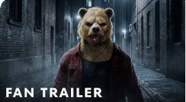
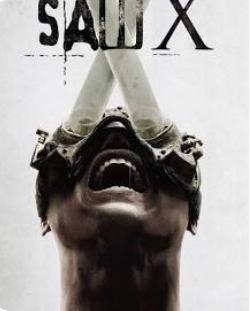
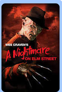

A dark and twisted take on a childhood classic.
It was unique and entertaining.

An intense horror thriller with great mystery
and one of the best twist endings in horror.

The original Freddy Krueger movie.
A horror classic with a unique story that still holds up today.
